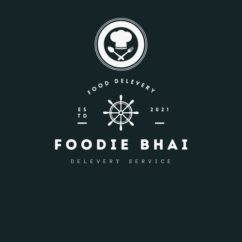

Assalamualaulaikum!!Welcome to my portfolio
About Me

Assalamualaulaikum.Welcome to my Portfolio.
I am Mahi Sarwar Anol.An undergradate student in CSE Major from Daffodil International University.
In my young age I was always interested in modern technologies.Specially on Computers and Smartphones.I loved playing games back then and wanted to become a game developer someday.
After growing up a little bit I realised that coding is a kind of poetry which doesn't create sense for all.But as a analytical thinker and problem solver it definately taught me the tragedy of logics in life. To apply these critical thinking and logics in real life and help the mankind by making their life simpler,what can be a better tool than coding?
So creating application with interactive ui and optimized code for backend became my ultimate passion.
In my freetimes I love to watch youtube videos,read self improvement books,play guitar and traveling.
Projects
FoodieBhai
Use Laguages:Java,Java Swing framework
Food Bhai is basically a food delevery created based on bangladeshi perspective.The main goals of this application are:-
- Providing User friendly service.
- Connect the customers with the Ordering System they can directly place the order on the app.
- Dynamic food ordering Ordering Cart System
- Providing client side service.
- Maintaining first come first serve policy.
Snapshots
